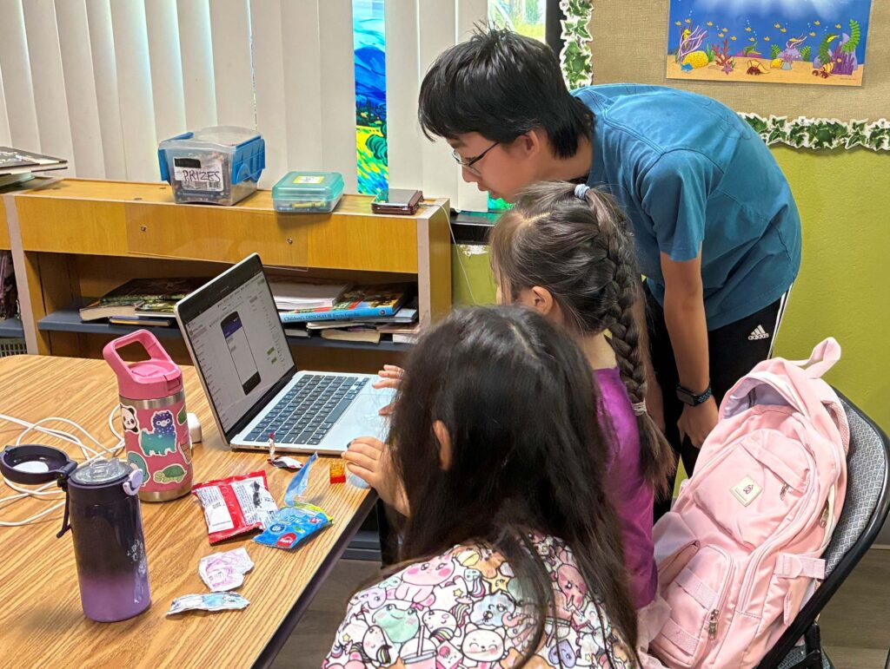
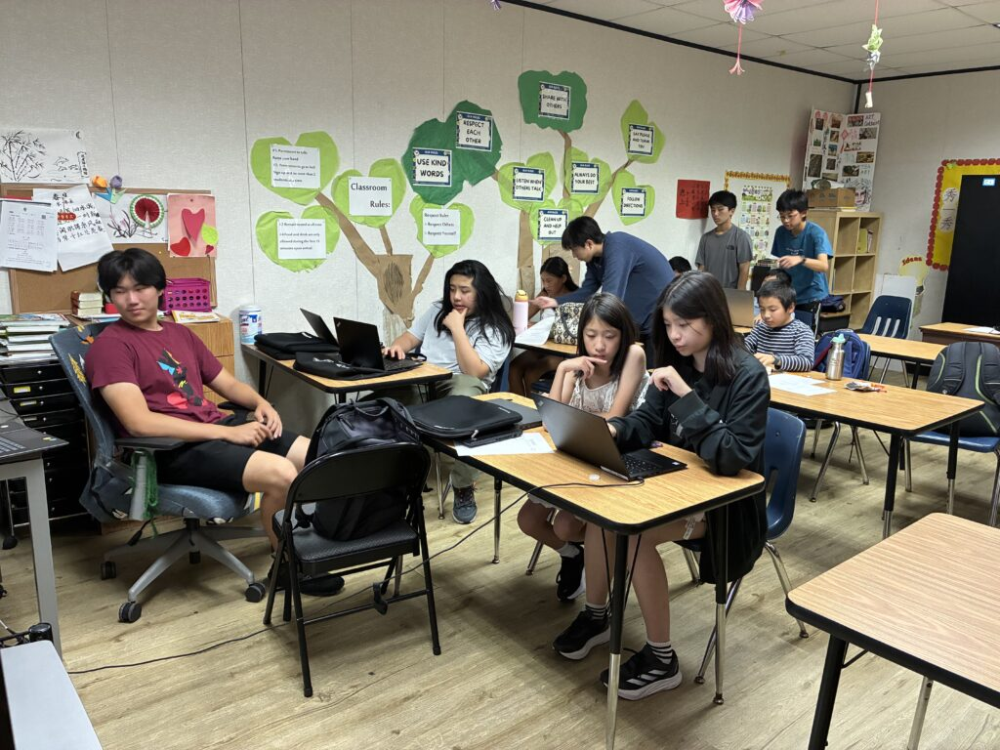
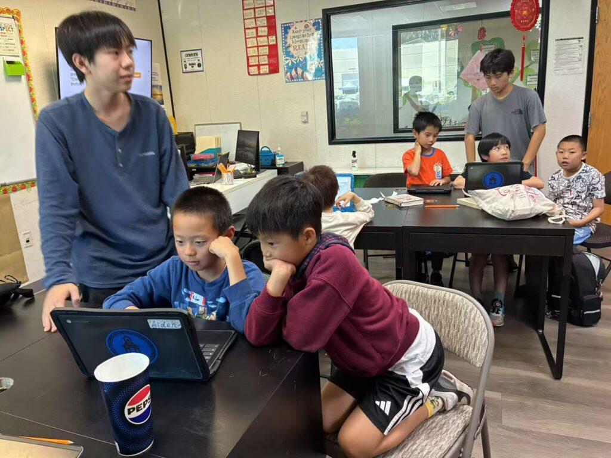

San Diego, CA – July 2025 – ESC Club proudly wrapped up its 2025 Summer In-Person Coding Week, held at Amazing Grace Christian School in San Diego. This dynamic, five-day program （07/07/2025-07/11/2025） introduced students aged 10 to 15 from both San Diego and Taiwan to the exciting world of mobile app development using MIT App Inventor.

The camp was thoughtfully designed and led by ESC Club members, many of whom are past winners of the prestigious Congressional App Challenge. These student leaders brought their expertise, enthusiasm, and one-on-one mentorship to ensure every participant received personalized support. The curriculum focused on beginner-level block-based coding, making it fun and accessible for young learners with no prior experience.

Throughout the week, students engaged in hands-on activities and were inspired by live demonstrations of award-winning apps previously created by ESC Club members. For many of the visiting students from Taiwan—especially girls—this was their very first exposure to coding, opening doors to future exploration in STEM fields.

“The goal of this camp wasn’t just to teach coding,” said one club instructor. “It was to inspire confidence, creativity, and curiosity in students from diverse backgrounds.”

The enthusiasm in the classroom was palpable as students expressed excitement in creating their own app prototypes. Many remarked how empowering it felt to build something tangible from their own ideas.
ESC Club continues to lead efforts in promoting equal access to STEM education across cultures and borders, connecting young minds through innovation and learning.